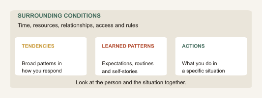
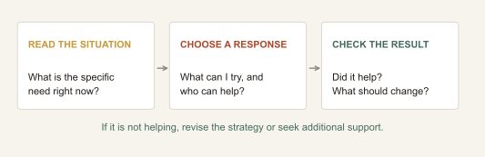
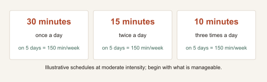
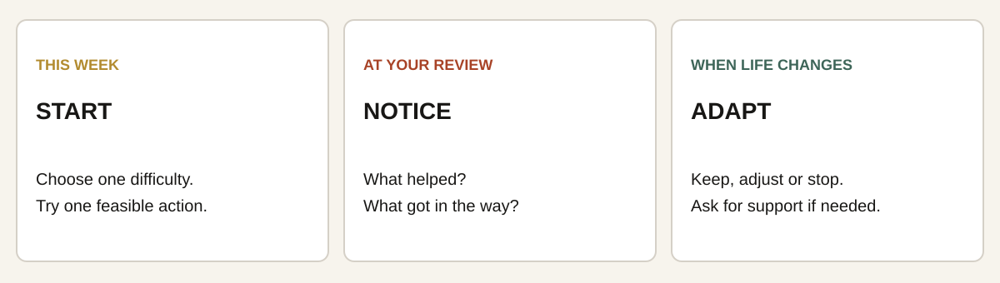

Change Without
Losing Yourself
Why moving abroad can feel hard and practical ways to cope. A practical guide for Africans moving across borders for study, work, family or safety.
READ THIS FIRST
The report in one minute
Moving abroad can bring opportunity while removing familiar relationships, routines, language and roles. Feeling unsettled does not, by itself, mean you made the wrong decision.
Begin by identifying what is missing. Loneliness may call for regular, meaningful contact; an unclear application may need qualified advice; exhaustion may require rest or a change in workload. Choose one manageable response, try it and check whether it helps.
Learn how your new surroundings work while protecting the values and relationships that matter to you. A difficult interaction or a temporary job does not define your ability or worth. Small, repeatable actions are easier to sustain when your environment supports them.
Movement, workable sleep routines and honest conversations can support adjustment. They cannot resolve discrimination, unsafe conditions or every mental health difficulty. Seek appropriate support when distress persists, worsens or disrupts daily life.
Start this week: name one specific difficulty, contact one person or service, and choose one action you can review. You can appreciate the move, miss home and reassess your choices without presenting every day as a success story.
Explore the four figures below. Download figure notes and data (CSV) · Source list (JSON)
Section 01Why an opportunity can still feel difficult
You can be grateful for the opportunity to live abroad and still miss the life you left.
In the accounts supplied for this report, one writer describes a Nigerian friend in the UK experiencing the shock of returning to a quiet home after growing up surrounded by relatives. A young Kenyan preparing to leave on a scholarship struggles with separating from the cousin who raised him. These are unverified individual accounts, not a measure of how often migrants struggle. They illustrate a question worth asking: what happens when an opportunity arrives with losses we did not prepare for? [1] [2]
A move can remove support you barely noticed. Companionship once happened over meals or through neighbours; now it requires planning around shifts, transport and calendars. Familiar humour becomes harder to express in another language. Experience that colleagues once recognised may be difficult to demonstrate in a new job market.
This report is for Africans moving across borders for study, work, family, exploration or safety, including moves within Africa. A funded student, an accompanying partner and someone seeking protection have different choices. There is no single African culture or universal adjustment timetable.
WHO identifies separation, insecurity, language barriers and discrimination among the conditions affecting migrant mental health. The useful question is what support or opportunity is missing from this person's life. [3]
Before departure, prepare for an ordinary week. Identify a reliable contact, the route to health care, an affordable recurring activity and the essentials of meals, transport and rest. If you are moving with others, ask about each person's needs. One successful job or admission does not automatically give the whole household a workable life.
Section 02Separate a difficulty from your whole identity
Moving can create a gap between who you know yourself to be and what other people can currently see. You may have led a team at home and now need help understanding a letter. A new language can make a confident person appear hesitant. Those circumstances deserve attention before you conclude that your abilities have disappeared.
The Solved material offers a useful, simplified distinction: traits are broad tendencies; adaptations include learned beliefs, habits and identities; behaviours are specific actions. Treat it as a thinking aid, not a complete scientific model of a person. [6]
“I did not speak in that meeting” describes an event. “I am incapable of leadership” makes a much larger claim. You might prepare one question, ask how contributions are invited, and notice what happens next. A quieter person can develop useful speaking skills without making constant sociability the goal.
Figure 1. Choose the right target


Traits are relatively stable, but adults are not permanently fixed. A review of 207 studies, mainly clinical interventions, found changes in personality measures; it does not promise that a short exercise will transform anyone. [7] Personality tests are optional prompts for reflection. Their language, cultural fit and administration matter, and measurement research warns against assuming a questionnaire performs equally well everywhere. [8]
You can begin without a test: notice when you feel capable or depleted, compare several settings, and ask someone trustworthy for specific observations. Distinguish a longstanding preference from a response to an unfamiliar or unsafe situation.
Maya Shankar suggests examining capabilities, values and identity during change. Ask what mattered within a former role: helping people understand, solving problems or organising a team. Find a feasible way to express part of that value while pursuing your next step. [9] A small project or a clear explanation of previous work can make skills visible; professional recognition and fair hiring still need attention. Your current job title cannot describe everything you bring.
Section 03Learn the local rules while keeping your values
The same behaviour can carry different meanings across families, workplaces and classrooms. Silence may communicate respect in one setting and be read as disengagement in another. Direct disagreement may be ordinary discussion to one person and a personal challenge to someone else. These are possible interpretations, not fixed national characteristics.
Separate what happened from your first explanation. “My colleague did not invite me” is an observation. “Nobody here likes people from my country” is an interpretation that requires more evidence. Equally, repeated discriminatory treatment should not be dismissed as a misunderstanding. Curiosity and recognising unfairness can coexist.
Ask concrete questions: “How do people usually contribute in these meetings?” “Would you prefer questions during the presentation or afterwards?” “Which part of my work needs changing?” Specific feedback is more useful than a vague instruction to fit in.
Learning a wider range of responses can give you choices. You can state an achievement clearly while valuing modesty, or explain a disagreement respectfully without abandoning your concern. Some adjustments are costly; consider whether they serve a purpose you accept.
Decide what to preserve: language, faith, food, hospitality, creative interests or family connection, according to your own values. Change arrangements when necessary. A planned call can preserve closeness when messages throughout the night are disrupting sleep.
Partners and children may adapt at different speeds. Discuss one situation at a time rather than making the most comfortable person's experience the household standard. When the problem is exclusion, exploitation or an unsafe power relationship, individual practice may be insufficient; institutional support and fair treatment matter. [3]
Section 04Build connection you can return to
You can attend lectures, work with colleagues and belong to several WhatsApp groups while having nobody you feel able to speak to honestly. John Cacioppo's interviews distinguish social contact from feeling connected. WHO similarly describes loneliness as a gap between the relationships someone has and those they need. [4] [5]
Name the connection you miss. Is it someone who understands your humour, a person nearby who could help in an emergency, or a place where you can participate without constantly explaining yourself? Different relationships may meet different needs.
Choose an activity you can afford, reach and return to: a walking group, community class, volunteering session, place of worship or language exchange. Repeated contact creates opportunities to become familiar. A small invitation can follow: “I enjoyed talking after class. Would you like a coffee here next Thursday?”
Quiet activities can be as worthwhile as large gatherings. If disability, caring duties, money or geography restrict meeting in person, accessible online groups can also provide meaningful connection. Keep relationships back home that support you while leaving some room for life where you now live.
Notice whether interest and effort are reasonably mutual. One declined invitation may reflect timing; continued disrespect is a reason to look elsewhere. A shared nationality does not guarantee trust, and friendship does not require identical backgrounds.
For people welcoming newcomers, make invitations practical: name the time, place, cost and activity, then follow up. “Come whenever” may be harder to act on than “We meet at the library entrance at two; it is free.”
Ask what digital contact is doing for you. A voice call that leaves you feeling understood is different from an evening comparing your difficult day with other people's public milestones.
Section 05Choose a response that fits the problem
George Bonanno's work emphasises flexibility: recognise what a situation requires, draw on several possible responses, then check whether your choice helps. Resilience is not a demand to remain positive or handle every difficulty alone. [10] [11]
Begin with something more specific than “My life abroad is going badly.” Try “Sunday afternoons are lonely,” “I do not understand the next step in this application,” or “I keep rehearsing tomorrow's interview instead of sleeping.” These difficulties may need different responses.
Figure 2. A coping strategy needs feedback


Name the immediate need. Does this situation call for information, practical help, company, rest, protection or professional care? Several may be relevant, but choosing one starting point reduces what you must solve at once.
Try an available response. Arrange a walk for the empty Sunday. Ask the relevant service or a qualified adviser about the application. Practise the difficult interview questions with someone. You can ask a trusted person to sit with you while you make a call or organise a task.
Use feedback. Did you feel more connected? Did the answer clarify the next step? Was the effort affordable and sustainable? If the response did not help, consider whether it needs more time, a smaller version or a different approach. Unsafe settings call for protection, not repeated exposure to prove resilience.
Suzuki discusses converting some everyday worries into action; NHS guidance also distinguishes practical problems from hypothetical worries. [12] [14] Briefly write what concerns you, identify anything you can influence, and choose when to act. Where nothing can be resolved now, seek support or return attention to the present task rather than demanding certainty.
These examples apply the framework to migration; they are not a tested treatment programme. Persistent or disabling anxiety deserves assessment, not pressure to make every anxious feeling productive.
Section 06Give your body a workable routine
When your future feels uncertain, food, sleep and movement can seem secondary. Suzuki's interview makes the practical case for enjoyable movement and small starts. Exercise can support wellbeing, but it cannot settle an immigration question or substitute for needed care. [12]
For adults, WHO recommends 150-300 minutes of moderate aerobic activity each week, or 75-150 minutes of vigorous activity, or an equivalent combination, plus muscle strengthening on at least two days. Some activity is better than none. This is population guidance, not a starting requirement or an individual prescription. [13]
Figure 3. Activity can fit different weekly schedules


Begin with something suitable for your health and ability: a short walk, dancing at home, wheeling, gardening or adapted exercise. If you dislike running, choose something else. A shared activity may also provide familiar faces and a reason to explore your surroundings.
Fit the routine to your real schedule. Someone working nights needs a different arrangement from a daytime student. Protect a workable sleep opportunity and regular meals where possible; if housing, caring duties or working conditions prevent them, address those constraints too.
The goal is a repeatable source of support. Exhausting yourself or turning exercise into another measure of personal worth defeats that purpose.
Section 07Make the next useful action easier
Understanding a pattern does not automatically change it. The Change transcripts repeatedly return to the gap between a rewarding insight and what happens next. An old habit may also be meeting a need: relief, belonging, reassurance or a feeling of competence. [6]
Ask what you would lose if the habit disappeared. If late-night scrolling provides your only contact with home, simply removing the phone leaves a connection problem. Arrange a realistic alternative, such as a call before bedtime, while changing the behaviour that disrupts sleep.
Choose one small action and make its cue clear. “After Tuesday's class, I will ask one person whether they are attending next week” is easier to act on than “I must become more social.” Research on implementation intentions supports specifying when and how to act; it does not remove barriers such as cost or safety. [19]
Arrange the environment to help: place walking shoes near the door, prepare tomorrow's lunch, keep an appointment reminder or study somewhere with fewer distractions. A behaviour-change framework called COM-B asks about capability, opportunity and motivation. If something repeatedly fails, examine all three before deciding you lack discipline. [18]
Have a smaller fallback for difficult days. Ten minutes of study may preserve contact with the task when a long session is unrealistic. After a missed day, return at the next feasible opportunity rather than treating the lapse as a new identity.
Habit formation varies; there is no universal number of days after which a new life should feel natural. [20] A visit home, a new shift or an exam period may disrupt familiar cues. Before a transition, decide which one or two practices to protect and what support they require.
At your review, separate the action, conditions and result. You can send an invitation; you cannot control whether it is accepted. That distinction helps you learn without turning every outcome into a judgement about yourself.
Section 08Make family expectations discussable
For some people, moving abroad carries other people's hopes alongside their own. Relatives may have helped pay for travel or education. Someone may rely on contributions from abroad. Those relationships can provide purpose and support, while unclear expectations can become difficult.
If you only report progress, the people closest to you may never learn that you need assistance. You could say: “I am glad I came, and the adjustment is harder than I expected. I need someone I can talk to without having to present a success story.”
Where money is involved, explain what you can reliably manage after essential costs and what would require a separate discussion. Agree when to revisit the arrangement. A specific, honest commitment is easier to plan around than repeated promises made under pressure.
Distinguish a value from one way of expressing it. Caring for family might involve a planned contribution, practical help or regular contact. Being available every hour is only one arrangement, and it may be unsustainable.
Listen to how a change affects others. Disagreement does not automatically mean someone is sabotaging your growth. Equally, coercion or abuse should not be excused as a cultural expectation.
Partners who moved for someone else's opportunity need attention too: independent friendships, access to money, information and a voice in household decisions. The person with the job offer is not the only person adapting.
Section 09Allow grief and know when to seek help
Moving can involve mourning ordinary things: familiar company, a role you valued or being present for family events. You may also be grieving a person, a relationship or a future you expected. Gratitude does not cancel those feelings.
Bonanno's interview challenges compulsory positivity and a fixed sequence of grief. People can experience sadness and moments of enjoyment without either making the other false. You do not have to turn a painful experience into a lesson or disclose your history to earn support. [10]
Keep a connection that matters through a call, familiar food, music, language, prayer or a personal ritual. These are possibilities, not obligations. When change is forced, safety, stable accommodation, legal assistance and continuity of care may be the first priorities.
Relocation distress alone does not establish PTSD or depression. Some people have experienced potentially traumatic events; others are dealing with painful disruption. Most people exposed to potentially traumatic events do not develop PTSD, while those who do can benefit from treatment. [15]
Seek qualified help when distress persists, worsens or interferes with sleeping, eating, studying, working or caring for yourself. NIMH highlights severe symptoms lasting two weeks or more, but serious difficulties deserve attention sooner; this is not a waiting period. [16]
A first conversation with a doctor, university health service or qualified mental health professional can be practical: “I am sleeping poorly, missing work and finding it difficult to cope.” Ask about language support, cost, confidentiality and available options. A trusted person can help arrange the appointment.
If you may harm yourself or cannot stay safe, seek immediate help through the local emergency or crisis service and contact someone you trust. For everyday stress, WHO's illustrated Doing What Matters in Times of Stress is an optional resource available in several languages. [17]
Section 10Change conditions as well as responses
A coping strategy has limits when the difficulty is unsafe housing, discrimination, exploitation or a schedule that leaves no adequate rest. Identify the person or service with authority to address the condition: a university support team, migrant association, worker organisation, qualified adviser or health service. Check what applies in your location and circumstances. [3]
Institutions and communities have responsibilities too. Useful support includes clear expectations, accessible care, trustworthy referrals and recurring opportunities to meet people beyond welcome week. A member who cannot afford transport or attend at the chosen time needs a different arrangement, not another message about motivation. These are AGF recommendations informed by the importance of opportunity in behaviour change. [18]
Where choices are available, reassess a job, city or living arrangement that is not working. Staying, moving elsewhere and returning home each have practical consequences. Consider finances, permissions, relationships and your own priorities with appropriate advice. The aim is an informed decision, rather than protecting an image of success.
A partner, a retiree or someone unable to work may need a different definition of progress. Ask whose needs are missing from the plan before deciding that the whole household has settled.
Section 11Choose a first step and a review date
You do not need to use every suggestion. Choose the most relevant starting point. These are planning prompts, not a scientific timetable for settling abroad.
- Make essentials easier to reach. Save a reliable contact and the local route to urgent help. Clarify one unresolved requirement affecting health, housing, study or work.
- Arrange meaningful contact. Make one specific invitation, return to an accessible group or schedule an honest call with someone you trust.
- Protect one daily support. Choose a feasible routine for food, sleep or movement. Decide what its smaller version looks like on a hard day.
- Turn one difficulty into an experiment. Write the problem, the action, the support it needs and a date to review what happened.
Figure 4. Review points for a first experiment


A simple example: “Sunday afternoons feel lonely. This week I will ask a classmate about a short walk. If they are unavailable, I will look for a recurring local activity I can reach. Next Sunday I will review whether I made contact, how it felt and what to try next.” The example is illustrative; nobody's response is guaranteed.
At each review, ask: what helped, what got in the way, and what needs a different response? Look for ordinary changes that matter: understanding a task, having someone to call, finding suitable advice or resting more reliably.
For those already settled, a practical contribution may be to explain a service, make an introduction or check in after the first welcome. We can celebrate someone getting a visa and keep asking how they are doing after they arrive.
Sources and evidence notes
This is an editorial synthesis for Africans moving abroad, not a systematic review or a treatment programme. The October 2026 revision integrates eight supplied documents; the two author drafts share the same body text. Interviews provide explanatory ideas, online accounts illustrate experiences, and research or official guidance supports factual claims. Exercises and scenarios are AGF applications. Source populations differ; the report does not estimate how many Africans abroad experience a condition. Reading time is an estimate based on the text plus time for four figures. Revised 14 October 2026.
- Samuel Kimani Sikuku. Two supplied migration drafts. Why Moving Abroad Can Feel So Hard Substack Draft and Moving Abroad and Coping With Change. Same body; editorial framing, not independent research.
- Reader-supplied compilation. Change Examples. Thirteen pages. Selected, unverified online accounts and notes on Suzuki, Bonanno and Shankar; not a representative sample.
- WHO (2025). Refugee and migrant mental health. Conditions, access to services and community support across diverse migrant populations.
- John Cacioppo / Big Think. How to cope with loneliness. Read alongside the supplied nine-page Loneliness and Human Connection compilation of six interviews.
- WHO (2025). Social connection. Distinguishes social isolation, loneliness and relationship quality.
- Solved with Mark Manson (2026). Change. Supplied 82-page SOLVED Change Guide and 451-page Change Solve transcript. Practical concepts; unsupported absolutes and sponsor claims excluded.
- Roberts et al. (2017). A systematic review of personality trait change through intervention. 207 studies, mainly clinical interventions. Changes in trait measures do not establish a universal self-help prescription.
- Laajaj et al. (2019). Challenges to capture the Big Five personality traits in non-WEIRD populations. Measurement and administration challenges; not evidence that any population lacks personality traits.
- Maya Shankar / TED (2023). Why change is so scary and how to unlock its potential. Reflection on capabilities, values and identity; also included in the supplied examples.
- George Bonanno / Big Think. Why forcing positivity after trauma does not build resilience. Supplied Trauma Resilience transcript, especially flexibility at 31:27 and grief from 1:00:54.
- Bonanno and Burton (2013). Regulatory flexibility. Conceptual review of context sensitivity, strategy repertoire and feedback; migration examples are AGF adaptations.
- Wendy Suzuki / Big Think. Move your body grow your brain. Supplied Exercise Anxiety Brain transcript. Everyday versus clinical anxiety; enjoyable movement and small starts.
- WHO (2020). Guidelines on physical activity and sedentary behaviour. Adult activity guidance, including disability and chronic conditions. Figure 3 is illustrative scheduling.
- NHS Every Mind Matters. Tackling your worries. Practical versus hypothetical worries and choosing a next action.
- WHO (2026). Post-traumatic stress disorder. Distress, symptoms and treatment; a move alone does not establish a diagnosis.
- US National Institute of Mental Health. My Mental Health Do I Need Help. Symptoms and functioning. US crisis numbers are not generalised to other countries.
- WHO (2020). Doing What Matters in Times of Stress. Illustrated stress-management guide with multiple language editions.
- Michie et al. (2011). The behaviour change wheel. COM-B: capability, opportunity and motivation.
- Gollwitzer and Sheeran (2006). Implementation intentions and goal achievement. Meta-analysis of plans specifying when, where and how to act.
- Lally et al. (2010). How are habits formed. Habit automaticity developed at different rates. The study does not provide a timetable for migrant adjustment.
Build change you can sustain.
Share this guide with someone preparing to move or finding their way in a new place.